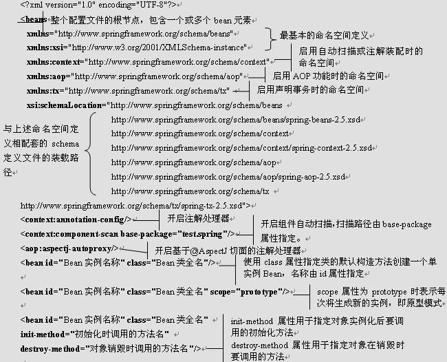
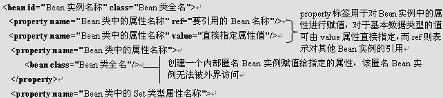
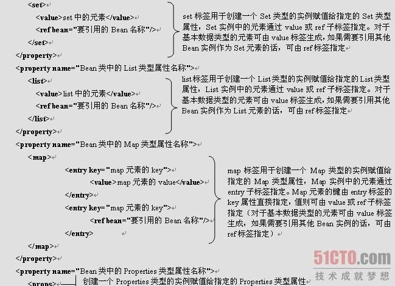
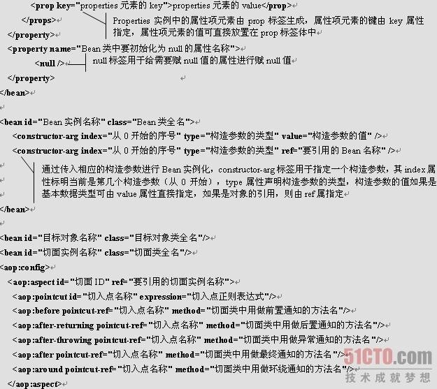
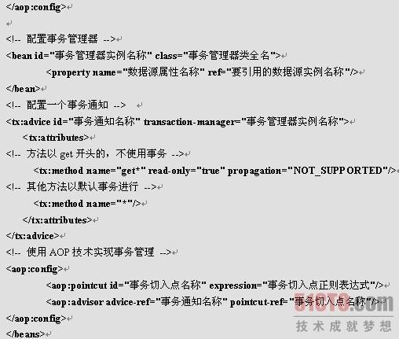
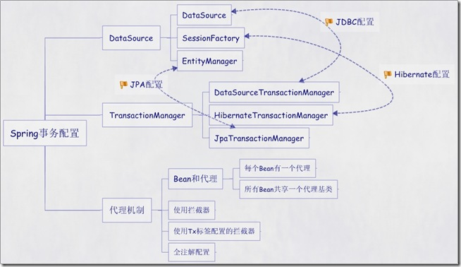

Spring介绍
Spring 框架是一个分层架构，由 7 个定义良好的模块组成。Spring 模块构建在核心容器之上，核心容器定义了创建、配置和管理 bean 的方式，如图所示。

Spring框架七大模块介绍（每个模块（或组件）都可以单独存在，或者与其他一个或多个模块联合实现）
| Spring Core： |
核心容器提供 Spring 框架的基本功能。核心容器的主要组件是 BeanFactory，它是工厂模式的实现。BeanFactory 使用控制反转 （IOC） 模式将应用程序的配置和依赖性规范与实际的应用程序代码分开。 |
| Spring Context： |
Spring 上下文是一个配置文件，向 Spring 框架提供上下文信息。Spring 上下文包括企业服务，例如 JNDI、EJB、电子邮件、国际化、校验和调度功能。 |
| Spring AOP： |
通过配置管理特性，Spring AOP 模块直接将面向方面的编程功能集成到了 Spring 框架中。所以，可以很容易地使 Spring 框架管理的任何对象支持 AOP。Spring AOP 模块为基于 Spring 的应用程序中的对象提供了事务管理服务。通过使用 Spring AOP，不用依赖 EJB 组件，就可以将声明性事务管理集成到应用程序中。 |
| Spring DAO： |
JDBC DAO 抽象层提供了有意义的异常层次结构，可用该结构来管理异常处理和不同数据库供应商抛出的错误消息。异常层次结构简化了错误处理，并且极大地降低了需要编写的异常代码数量（例如打开和关闭连接）。Spring DAO 的面向 JDBC 的异常遵从通用的 DAO 异常层次结构。 |
| Spring ORM： |
Spring 框架插入了若干个 ORM 框架，从而提供了 ORM 的对象关系工具，其中包括 JDO、Hibernate 和 iBatis SQL Map。所有这些都遵从 Spring 的通用事务和 DAO 异常层次结构。 |
| Spring WEB |
模块：Web 上下文模块建立在应用程序上下文模块之上，为基于 Web 的应用程序提供了上下文。所以，Spring 框架支持与 Jakarta Struts 的集成。Web 模块还简化了处理多部分请求以及将请求参数绑定到域对象的工作。 |
| Spring MVC |
MVC 框架是一个全功能的构建 Web 应用程序的 MVC 实现。通过策略接口，MVC 框架变成为高度可配置的，MVC 容纳了大量视图技术，其中包括 JSP、Velocity、Tiles、iText 和 POI。 |
Spring JAR介绍
【Spring 3.1包详解】
备注：以下的jar包，如果没有特殊说明，大多数的最新版本都可以从http://ebr.springsource.com/repository/app/下载到
Spring 3.1与之前的 2.X 的不一样，新版本把原来的包分解了，功能分工明确：
org.springframework.aop-3.1.1.RELEASE.jar ---- ----spring 的面向切面编程，提供AOP（面向切面编程）实现，
org.springframework.asm-3.1.1.RELEASE.jar ---- ---- Spring独立的asm程序, Spring2.5.6的时候需要asmJar 包,3.0开始提供他自己独立的asm.jar
。ASM是小巧轻便的 Java 字节码操控框架 ，它能方便地生成和改造 Java 代码。 Hibernate 和 Spring 在底层都用到了 ASM(CgLib 底层用的 asm)。
org.springframework.aspects-3.1.1.RELEASE.jar ---- ---- spring整合了aspectjrt.jar，也可以使用aspectjrt.jar来代替。
org.springframework.beans-3.1.1.RELEASE.jar ---- ---- springIoC（依赖注入）的基础实现，所有应用都要用到的，它包含访问配置文件、创建和
管理bean以及进行Inversion of Control / Dependency Injection（IoC/DI）操作相关的所有类。
org.springframework.context.support-3.1.1.RELEASE.jar ---- ---- spring-context 的扩展支持，包含支持缓存Cache（ehcache）、JCA、JMX、邮
件服务（Java Mail、COS Mail）、任务计划Scheduling（Timer、Quartz）方面的类。
org.springframework.context-3.1.1.RELEASE.jar ---- ----spring 提供在基础 IoC 功能上的扩展服务，此外还提供许多企业级服务的支持，如 邮件
服务、任务调度、JNDI定位、EJB 集成、远程访问、 缓存以及各种视图层框架的封装等。
org.springframework.core-3.1.1.RELEASE.jar ---- ---- 包含Spring框架基本的核心工具类，Spring其它组件要都要使用到这个包里的类，是其它组
件的基本核心。
org.springframework.expression-3.1.1.RELEASE.jar ---- ----spring 表达式语言。
org.springframework.instrument.tomcat-3.1.1.RELEASE.jar ---- ----spring3.1 对 Tomcat 的连接池的基成。
org.springframework.instrument-3.1.1.RELEASE.jar ---- ----spring3.1 对服务器的代理接口。
org.springframework.jdbc-3.1.1.RELEASE.jar ---- ----包含对Spring对JDBC数据访问进行封装的所有类。
org.springframework.jms-3.1.1.RELEASE.jar ---- ----提供了对JMS 1.0.2/1.1的支持类。
org.springframework.orm-3.1.1.RELEASE.jar ---- ----包含Spring对DAO特性集进行了扩展，使其支持 iBATIS、JDO、OJB、TopLink，因为Hibernate
已经独立成包了，现在不包含在这个包里了。这个jar文件里大部分的类都要依赖spring-dao.jar里的类，用这个包时你需要同时包含spring-dao.jar包 。
org.springframework.oxm-3.1.1.RELEASE.jar ---- ----spring 对Object/XMI 的映射的支持，可以让JAVA与XML之间来回切换。
org.springframework.test-3.1.1.RELEASE.jar ---- ----spring 对Junit 等测试框架的简单封装。
org.springframework.transaction-3.1.1.RELEASE.jar ---- ----为为JDBC、Hibernate、JDO、JPA等提供的一致的声明式和编程式事务管理。
org.springframework.web.portlet-3.1.1.RELEASE.jar ---- ----springMVC 的增强，支持portlet标准（JSR168/JSR286）。
org.springframework.web.servlet-3.1.1.RELEASE.jar ---- ----对 J2EE6.0 Servlet3.0 的支持。
org.springframework.web.struts-3.1.1.RELEASE.jar ---- ---- 整合 Struts 的支持。
org.springframework.web-3.1.1.RELEASE.jar ---- ----包含Web应用开发时，用到Spring框架时所需的核心类，包括自动载入WebApplicationContext
特性的类、Struts与JSF集成类、文件上传的支持类、Filter类和大量工具辅助类。
【Spring AOP + aspectJ 编程需要导入】
Spring自带的：
1、org.springframework.aop-3.1.1.jar（依赖【2】、【3】、【4】）
2、com.springsource.org.aopalliance-1.0.0.jar
3、com.springsource.org.apache.commons.logging-1.1.1.jar
4、org.springframework.core-3.1.1.RELEASE.jar（依赖【3】）
使用aspectJ框架，还需导入：
5、org.springframework.aspects-3.1.1.RELEASE.jar（依赖【6】、【7】、【8】、【9】）
6、com.springsource.org.apache.commons.logging-1.1.1.jar
7、org.springframework.beans-3.1.1.RELEASE.jar（依赖【6】、【8】）
8、org.springframework.core-3.1.1.RELEASE.jar（依赖【6】）
9、org.springframework.context-3.1.1.RELEASE.jar（依赖【6】、【7】、【8】）
10、com.springsource.org.aspectj.runtime-1.6.12.RELEASE.jar（似乎可以不要，见【Spring 3.1包详解】）
11、com.springsource.org.aspectj.weaver-1.6.12.RELEASE.jar
如果项目不是面向接口编程，则还需要下载cglib包放到项目里，因为cglib包可以产生不面向接口的代理：
12、com.springsource.net.sf.cglib-2.2.0
另外，由于cglib底层实现使用了ASM，所以还需要导入Spring自带的：
13、org.springframework.asm-3.1.1.RELEASE.jar
【DataSource】
【使用c3p0需要导入】
com.springsource.com.mchange.v2.c3p0-0.9.1.2
【使用dbcp需要导入】
1、com.springsource.org.apache.commons.dbcp-1.2.2.osgi.jar(依赖【2】)
2、com.springsource.org.apache.commons.pool-1.5.3.jar
【使用Proxool需要导入】
1、com.springsource.org.logicalcobwebs.proxool-0.9.1（依赖【2】、【3】）
2、com.springsource.org.apache.commons.logging-1.1.1.jar
3、com.springsource.org.logicalcobwebs.cglib.core-0.9.1（依赖【4】）
4、com.springsource.net.sf.cglib-2.2.0.jar
【使用BoneCP需要导入】
1、bonecp-0.7.1.RELEASE.jar（在http://jolbox.com/requirements.html下载)（依赖【1】、【2】、【3】）
2、guava-11.0.2.jar（http://code.google.com/p/guava-libraries/wiki/Release11下载)
3、slf4j-api-1.6.4.jar（依赖【4】）
4、slf4j-nop-1.6.4.jar(如果要换成其他日志的实现，例如log4j，请自行替换成其他包)
5、jsr305-2.0.0.jar（据说本来是在JDK7中支持该标准的，但被推迟到了jdk8。 另外，我在官网中也没发现jdk7支持jsr305标准,下载地址
http://www.jarvana.com/jarvana/archive-details/com/google/code/findbugs/jsr305/2.0.0/jsr305-2.0.0.jar,下载后源码和二进制码事实
上都是在这个包里的）
【使用tomcat jdbc pool需要导入】
1、com.springsource.org.apache.tomcat.jdbc-1.0.9.3（依赖【2】）
2、com.springsource.org.apache.juli.extras.springsource-6.0.32.S2-r1673.jar ---- Apache Tomcat的JULI日志组件允许Web应用提供
自己的日志配置
Spring 配置文件讲解





Spring 加载配置文件方式
ApplicationContext context = new ClassPathXmlApplicationContext("applicationContext.xml");
获取Spring框架管理的类实例的方法有多种,如下：
方法一：在初始化时保存ApplicationContext对象
代码：
ApplicationContext ac = new FileSystemXmlApplicationContext("applicationContext.xml");
ac.getBean("beanId");
说明：
这种方式适用于采用Spring框架的独立应用程序，需要程序通过配置文件手工初始化Spring的情况。
方法二：通过Spring提供的工具类获取ApplicationContext对象
代码：
import org.springframework.web.context.support.WebApplicationContextUtils;
ApplicationContext ac1 =
WebApplicationContextUtils.getRequiredWebApplicationContext(ServletContext sc)
ApplicationContext ac2 = WebApplicationContextUtils.getWebApplicationContext(ServletContext sc)
ac1.getBean("beanId");
ac2.getBean("beanId");
说明：
这种方式适合于采用Spring框架的B/S系统，通过ServletContext对象获取ApplicationContext对象，然后
在通过它获取需要的类实例。
上面两个工具方式的区别是，前者在获取失败时抛出异常，后者返回null。
方法三：继承自抽象类ApplicationObjectSupport
说明：
抽象类ApplicationObjectSupport提供getApplicationContext()方法，可以方便的获取到ApplicationCont ext。Spring初始化时，会通过该抽象类的setApplicationContext(ApplicationContext context)方法将ApplicationContext 对象注入。
方法四：继承自抽象类WebApplicationObjectSupport
说明：
类似上面方法，调用getWebApplicationContext()获取WebApplicationContext
方法五：实现接口ApplicationContextAware
说明：
实现该接口的setApplicationContext(ApplicationContext context)方法，并保存ApplicationContext 对 象。Spring初始化时，会通过该方法将ApplicationContext 对象注入。
以上方法适合不同的情况，请根据具体情况选用相应的方法。
这里值得提一点的是，系统中用到上述方法的类实际上就于Spring框架紧密耦合在一起了，因为这些类是知道它们是运行在Spring框架上的，因此，系统中，应该尽量的减少这类应用，使系统尽可能的独立于当前运
行环境，尽量通过DI的方式获取需要的服务提供者。
1.利用ClassPathXmlApplicationContext 可以从classpath中读取XML文件
(1) ApplicationContext context = new ClassPathXmlApplicationContext("applicationContext.xml");
UserDao userDao = (UserDao)context.getBean("userDao");
(2) ClassPathXmlApplicationContext resource = new ClassPathXmlApplicationContext(new String[]{"applicationContext-ibatis-oracle.xml","applicationContext.xml","applicationContext-data-oracle.xml"});
BeanFactory factory = resource;
UserDao userDao = (UserDao) factory.getBean("userDao");
2. 利用ClassPathResource
可以从classpath中读取XML文件
Resource cr = new ClassPathResource("applicationContext.xml");
BeanFactory bf=new XmlBeanFactory(cr);
UserDao userDao = (UserDao)bf.getBean("userDao");
加载一个xml文件org.springframework.beans.factory.config.PropertyPlaceholderConfigurer不起作用
3．利用XmlWebApplicationContext读取
从Web应用程序的文件架构中，指定相对位置来读取定义文件。
XmlWebApplicationContext 的建構子無法帶參數，參考API文件會發現，預設的location會指向/WEB-INF/applicationContext.xml檔案。使用其 public static屬性DEFAULT_CONFIG_LOCATION可取得此預設檔名。由於我使用MyEclipse，預設會多一個"/WebRoot"的 目錄在WEB-INF之前，因此若在web project裡有一些與web無關的程式要使用context時(例如處理一些MVC架構中的"M"的部份)，就無法使用 XmlWebApplicationContext來讀取bean定義檔，因為default location會差一個"WebRoot"的目錄。
即 使在web.xml裡面，在DispatcherServlet定義中重新定義contextConfigLocation也一樣(此定義可以 override掉XmlWebApplicationContext中的DEFAULT_CONFIG_LOCATION值)，因為與web無關的程式 並不會經過web.xml的定義檔設定。目前我還沒試成功過XmlWebApplicationContext取得bean定義檔，使用 ClassPathXmlApplicationContext反而會快一些。
XmlWebApplicationContext ctx = new XmlWebApplicationContext();
ctx.setConfigLocations(new String[] {"/WEB-INF/ applicationContext.xml");
ctx.setServletContext(pageContext.getServletContext());
ctx.refresh();
UserDao userDao = (UserDao ) ctx.getBean("userDao ");
4.利用FileSystemResource读取
Resource rs = new FileSystemResource("D:/tomcat/webapps/test/WEB-INF/classes/ applicationContext.xml");
BeanFactory factory = new XmlBeanFactory(rs);
UserDao userDao = (UserDao )factory.getBean("userDao");
值得注意的是：利用FileSystemResource，则配置文件必须放在project直接目录下，或者写明绝对路径，否则就会抛出找不到文件的异常
5．利用FileSystemXmlApplicationContext读取
可以指定XML定义文件的相对路径或者绝对路径来读取定义文件。
方法一：
String[] path={"WebRoot/WEB-INF/applicationContext.xml","WebRoot/WEB-INF/applicationContext_task.xml"};
ApplicationContext context = new FileSystemXmlApplicationContext(path);
方法二：
String path="WebRoot/WEB-INF/applicationContext*.xml";
ApplicationContext context = new FileSystemXmlApplicationContext(path);
方法三：
ApplicationContext ctx = new FileSystemXmlApplicationContext("classpath:地址");
没有classpath的话就是从当前的工作目录
Spring IOC
IoC（Inversion of Control，控制倒转）: 这是spring的核心，贯穿始终。所谓IoC，对于spring框架来说，就是由spring来负责控制对象的生命周期和对象间的关系。
IoC的一个重点是在系统运行中，动态的向某个对象提供它所需要的其他对象。这一点是通过DIDI（Dependency Injection，依赖注入）来实现的。
依赖注入的三种方式：构造注入、setter注入、接口注入。(具体代码实现略...)
setter注入
java 代码：
...
private UserDao userDao;
public void setUserDao(UserDao userDao) {
this.userDao = userDao;
}
...
xml配置:
构造注入
java 代码：
...
private UserDao userDao;
public UserServiceImpl2(UserDao userDao){
this.userDao=userDao;
}
...
xml配置:
注：这里只是一部分常用方式，其他方式后续补全。
Spring AOP
Spring AOP 常用术语：
1.通知(Advice):
通知定义了切面是什么以及何时使用。描述了切面要完成的工作和何时需要执行这个工作。
2.连接点(Joinpoint):
程序能够应用通知的一个“时机”，这些“时机”就是连接点，例如方法被调用时、异常被抛出时等等。
3.切入点(Pointcut)
通知定义了切面要发生的“故事”和时间，那么切入点就定义了“故事”发生的地点，例如某个类或方法的名称，Spring中允许我们方便的用正则表达式来指定
4.切面(Aspect)
通知和切入点共同组成了切面：时间、地点和要发生的“故事”
5.引入(Introduction)
引入允许我们向现有的类添加新的方法和属性(Spring提供了一个方法注入的功能）
6.目标(Target)
即被通知的对象，如果没有AOP,那么它的逻辑将要交叉别的事务逻辑，有了AOP之后它可以只关注自己要做的事（AOP让他做爱做的事）
7.代理(proxy)
应用通知的对象，详细内容参见设计模式里面的代理模式
8.织入(Weaving)
把切面应用到目标对象来创建新的代理对象的过程，织入一般发生在如下几个时机:
(1)编译时：当一个类文件被编译时进行织入，这需要特殊的编译器才可以做的到，例如AspectJ的织入编译器
(2)类加载时：使用特殊的ClassLoader在目标类被加载到程序之前增强类的字节代码
(3)运行时：切面在运行的某个时刻被织入,SpringAOP就是以这种方式织入切面的，原理应该是使用了JDK的动态代理技术
Spring AOP实现的四种方式:
1.经典的基于代理的AOP
2.@AspectJ注解驱动的切面
3.纯POJO切面
4.注入式AspectJ切面
纯POJO切面——例如：
xmlns:xsi="http://www.w3.org/2001/XMLSchema-instance"
xmlns:aop="http://www.springframework.org/schema/aop"
xmlns:tx="http://www.springframework.org/schema/tx"
xmlns:jee="http://www.springframework.org/schema/jee"
xsi:schemaLocation="http://www.springframework.org/schema/beans http://www.springframework.org/schema/beans/spring-beans.xsd
http://www.springframework.org/schema/aop http://www.springframework.org/schema/aop/spring-aop.xsd
http://www.springframework.org/schema/tx http://www.springframework.org/schema/tx/spring-tx.xsd
http://www.springframework.org/schema/jee http://www.springframework.org/schema/jee/spring-jee.xsd">
注意：需要导入aspectjweaver.jar及spring-aop的包。
Spring 事务
事务的4个特性：
原子性：一个事务中所有对数据库的操作是一个不可分割的操作序列，要么全做，要么全不做。
一致性：数据不会因为事务的执行而遭到破坏。
隔离性：一个事务的执行，不受其他事务（进程）的干扰。既并发执行的个事务之间互不干扰。
持久性：一个事务一旦提交，它对数据库的改变将是永久的。
Spring事务的实现方式：
实现方式共有两种：编码方式；声明式事务管理方式。
基于AOP技术实现的声明式事务管理，实质就是：在方法执行前后进行拦截，然后在目标方法开始之前创建并加入事务，执行完目标方法后根据执行情况提交或回滚事务。
声明式事务管理又有两种方式：基于XML配置文件的方式；另一个是在业务方法上进行@Transactional注解，将事务规则应用到业务逻辑中。
统观spring事务，围绕着两个核心PlatformTransactionManager和TransactionStatus
spring提供了几个关于事务处理的类：
TransactionDefinition //事务属性定义
TranscationStatus //代表了当前的事务，可以提交，回滚。
PlatformTransactionManager这个是spring提供的用于管理事务的基础接口，其下有一个实现的抽象类AbstractPlatformTransactionManager,我们使用的事务管理类例如DataSourceTransactionManager等都是这个类的子类。
一般事务定义步骤：
TransactionDefinition td = new TransactionDefinition();
TransactionStatus ts = transactionManager.getTransaction(td);
try
{ //do sth
transactionManager.commit(ts);
}
catch(Exception e){transactionManager.rollback(ts);}
spring提供的事务管理可以分为两类：编程式的和声明式的。编程式的，比较灵活，但是代码量大，存在重复的代码比较多；
声明式的比编程式的更灵活。
编程式主要使用transactionTemplate。省略了部分的提交，回滚，一系列的事务对象定义，需注入事务管理对象.
void add()
{
transactionTemplate.execute( new TransactionCallback(){
pulic Object doInTransaction(TransactionStatus ts)
{ //do sth}
}
}
声明式：
使用TransactionProxyFactoryBean:
Spring事务配置的五种方式
前段时间对Spring的事务配置做了比较深入的研究，在此之间对Spring的事务配置虽说也配置过，但是一直没有一个清楚的认识。通过这次的学习发觉Spring的事务配置只要把思路理清，还是比较好掌握的。
总结如下：
Spring配置文件中关于事务配置总是由三个组成部分，分别是DataSource、TransactionManager和代理机制这三部分，无论哪种配置方式，一般变化的只是代理机制这部分。
DataSource、TransactionManager这两部分只是会根据数据访问方式有所变化，比如使用Hibernate进行数据访问时，DataSource实际为SessionFactory，TransactionManager的实现为HibernateTransactionManager。
具体如下图：

根据代理机制的不同，总结了五种Spring事务的配置方式，配置文件如下：
第一种方式：每个Bean都有一个代理
xmlns:xsi="http://www.w3.org/2001/XMLSchema-instance"
xmlns:context="http://www.springframework.org/schema/context"
xmlns:aop="http://www.springframework.org/schema/aop"
xsi:schemaLocation="http://www.springframework.org/schema/beans
http://www.springframework.org/schema/beans/spring-beans-2.5.xsd
http://www.springframework.org/schema/context
http://www.springframework.org/schema/context/spring-context-2.5.xsd
http://www.springframework.org/schema/aop http://www.springframework.org/schema/aop/spring-aop-2.5.xsd">
PROPAGATION_REQUIRED
第二种方式：所有Bean共享一个代理基类
xmlns:xsi="http://www.w3.org/2001/XMLSchema-instance"
xmlns:context="http://www.springframework.org/schema/context"
xmlns:aop="http://www.springframework.org/schema/aop"
xsi:schemaLocation="http://www.springframework.org/schema/beans
http://www.springframework.org/schema/beans/spring-beans-2.5.xsd
http://www.springframework.org/schema/context
http://www.springframework.org/schema/context/spring-context-2.5.xsd
http://www.springframework.org/schema/aop http://www.springframework.org/schema/aop/spring-aop-2.5.xsd">
PROPAGATION_REQUIRED
第三种方式：使用拦截器
xmlns:xsi="http://www.w3.org/2001/XMLSchema-instance"
xmlns:context="http://www.springframework.org/schema/context"
xmlns:aop="http://www.springframework.org/schema/aop"
xsi:schemaLocation="http://www.springframework.org/schema/beans
http://www.springframework.org/schema/beans/spring-beans-2.5.xsd
http://www.springframework.org/schema/context
http://www.springframework.org/schema/context/spring-context-2.5.xsd
http://www.springframework.org/schema/aop http://www.springframework.org/schema/aop/spring-aop-2.5.xsd">
PROPAGATION_REQUIRED
*Dao
transactionInterceptor
第四种方式：使用tx标签配置的拦截器
xmlns:xsi="http://www.w3.org/2001/XMLSchema-instance"
xmlns:context="http://www.springframework.org/schema/context"
xmlns:aop="http://www.springframework.org/schema/aop"
xmlns:tx="http://www.springframework.org/schema/tx"
xsi:schemaLocation="http://www.springframework.org/schema/beans
http://www.springframework.org/schema/beans/spring-beans-2.5.xsd
http://www.springframework.org/schema/context
http://www.springframework.org/schema/context/spring-context-2.5.xsd
http://www.springframework.org/schema/aop http://www.springframework.org/schema/aop/spring-aop-2.5.xsd
http://www.springframework.org/schema/tx http://www.springframework.org/schema/tx/spring-tx-2.5.xsd">
第五种方式：全注解
xmlns:xsi="http://www.w3.org/2001/XMLSchema-instance"
xmlns:context="http://www.springframework.org/schema/context"
xmlns:aop="http://www.springframework.org/schema/aop"
xmlns:tx="http://www.springframework.org/schema/tx"
xsi:schemaLocation="http://www.springframework.org/schema/beans
http://www.springframework.org/schema/beans/spring-beans-2.5.xsd
http://www.springframework.org/schema/context
http://www.springframework.org/schema/context/spring-context-2.5.xsd
http://www.springframework.org/schema/aop http://www.springframework.org/schema/aop/spring-aop-2.5.xsd
http://www.springframework.org/schema/tx http://www.springframework.org/schema/tx/spring-tx-2.5.xsd">
此时在DAO上需加上@Transactional注解，如下：
package com.bluesky.spring.dao;
import java.util.List;
import org.hibernate.SessionFactory;
import org.springframework.beans.factory.annotation.Autowired;
import org.springframework.orm.hibernate3.support.HibernateDaoSupport;
import org.springframework.stereotype.Component;
import com.bluesky.spring.domain.User;
@Transactional
@Component("userDao")
public class UserDaoImpl extends HibernateDaoSupport implements UserDao {
public List listUsers() {
return this.getSession().createQuery("from User").list();
}
}